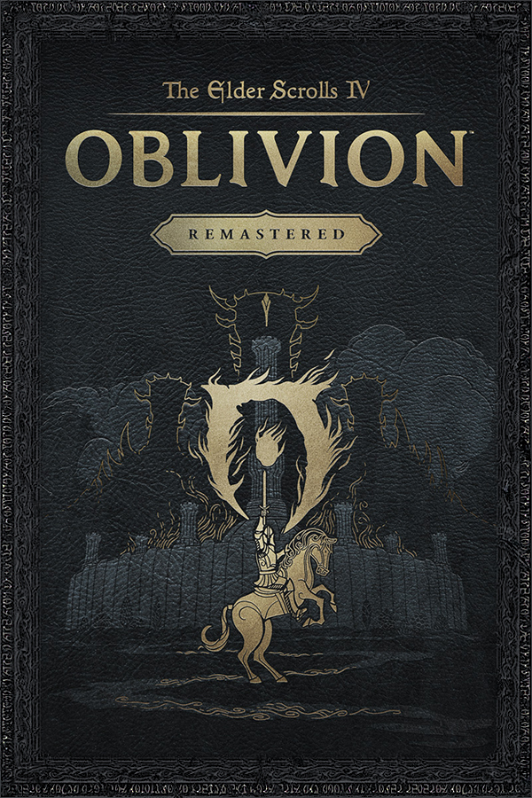

The Elder Scrolls IV: Oblivion Remastered
Every archived year-end list appearance, including placement and points earned.
About the Game
The Elder Scrolls IV: Oblivion™ Remastered modernizes the 2006 Game of the Year with all new stunning visuals and refined gameplay. Explore the vast landscape of Cyrodiil like never before and stop the forces of Oblivion from overtaking the land in one of the greatest RPGs ever from the award-winning Bethesda Game Studios. Rediscover Cyrodiil Journey through the rich world of Tamriel and battle across the planes of Oblivion where handcrafted details have been meticulously recreated to ensure each moment of exploration is awe-inspiring. Navigate Your Own Story From the noble warrior to the sinister assassin, wizened sorcerer, or scrappy blacksmith, forge your path and play the way you want. Experience an Epic Adventure Step inside a universe bursting with captivating stories and encounter an unforgettable cast of characters. Master swordcraft and wield powerful magic as you fight to save Tamriel from the Daedric invasion. The Complete Story Experience everything Oblivion has to offer with previously released story expansions Shivering Isles, Knights of the Nine, and additional downloadable content included in The Elder Scrolls IV: Oblivion Remastered.
| Released | 2025-04-22 |
|---|---|
| Developer | Bethesda Game Studios, Virtuos |
| Publisher | Bethesda Softworks |
| Genres | Action, RPG |
| Platforms | PC, PlayStation 5, Xbox Series S/X |
SingleplayerSteam AchievementsSteam CloudAtmosphericGreat SoundtrackRPGStory RichOpen WorldFirst-PersonThird PersonPartial Controller SupportFantasy
Where to Buy
Game information provided by RAWG.
Points by Year
List History
| Year | Source | List | Placement | Points |
|---|---|---|---|---|
| 2025 | Eurogamer | The 50 best games of 2025, ranked | 32 | 1 |
| 2025 | GameSpot | The Best Games Of 2025 | Unranked | 1 |
| 2025 | NME | THE 20 BEST GAMES OF 2025 | NME.com | 15 | 3 |